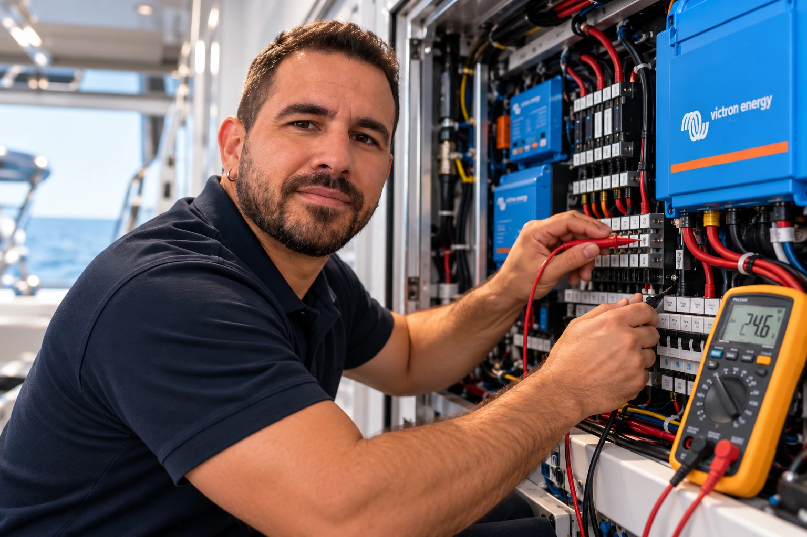
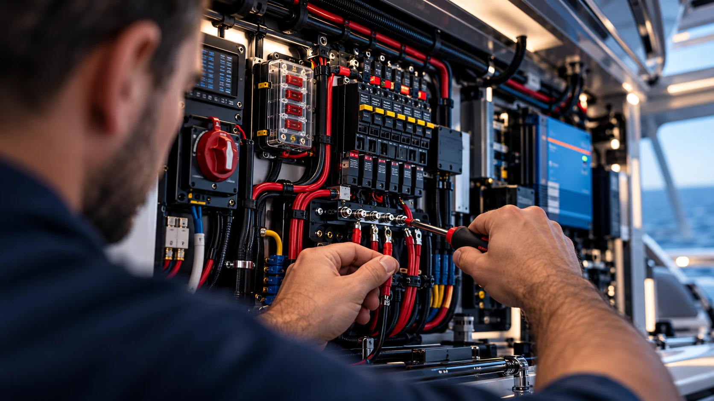
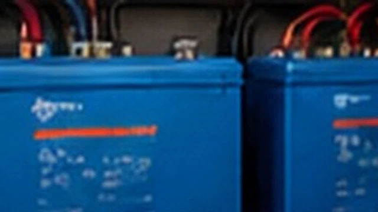
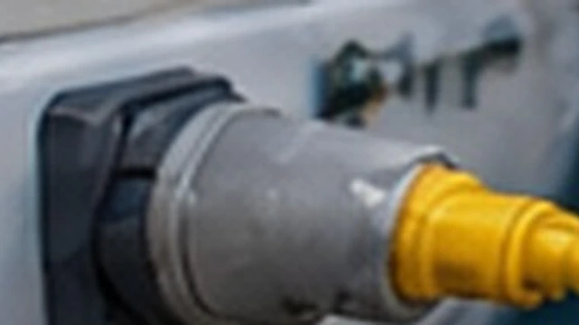
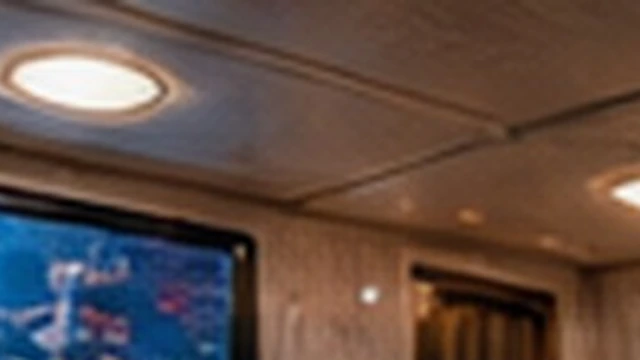
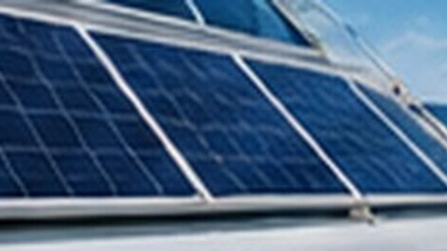
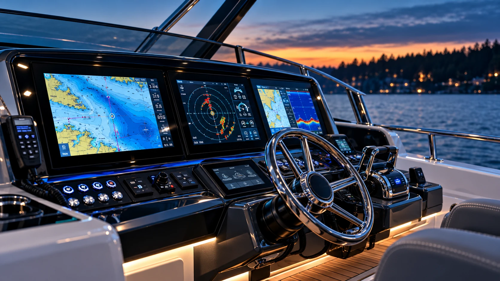
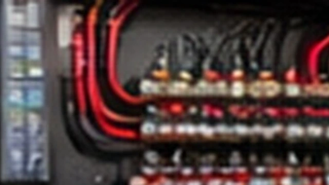

Diagnostics & Troubleshooting
Advanced fault isolation, circuit tracing and electrical troubleshooting.
MARINE ELECTRICAL SERVICES
Advanced troubleshooting, repair, modernization and onboard power solutions for recreational boats and yachts.

Advanced fault isolation, circuit tracing and electrical troubleshooting.

Electrical repairs, maintenance and onboard systems restoration.

Installation and modernization of AC and DC systems.

Marine battery banks, chargers, inverter/chargers and monitoring.

Shore power equipment, onboard connections and AC distribution.

Interior, exterior and energy-efficient LED lighting.

Marine solar panels, charging controllers and power integration.

Electrical installation and integration of navigation equipment.

Replacement and modernization of onboard wiring and distribution.
LET'S TALK ABOUT YOUR VESSEL
Tell us about your project and we'll discuss the next steps.